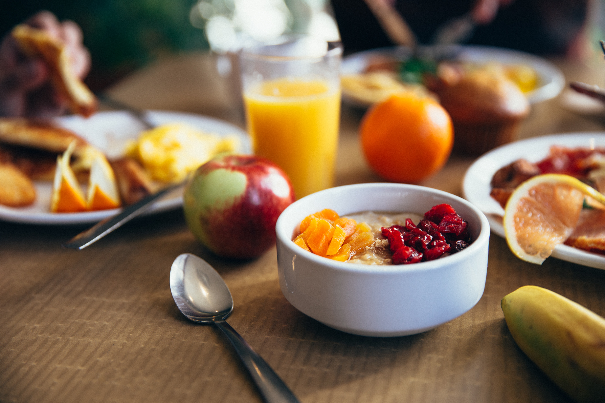

De Seg. à Dom.
das 07:00h às 21:00h
Aclimação
Aclimação - São Paulo
11 4002-8922
Um pouco sobre nós.
Somos a primeira e única Hortifruti. Criamos um jeito diferente de oferecer o frescor das feiras com a praticidade dos grandes mercados. E nosso compromisso é levar sempre até a sua mesa o que a natureza tem de melhor, com frutas, legumes e verduras fresquinhos e o sorriso que não pode faltar.
